::โซนสุวรรณภูมิ::
เริ่มกันโซนแรกที่ โซนสุวรรณภูมิ ที่ขอเริ่มโซนนี้เพราะรู้สึกว่ามันอะเมซิ่งเอามาก ๆ เป็นสถาปัตยกรรมตามจินตนาการความเชื่อ เรื่องพุทธจักรวาลของไทยในไตรภูมิพระร่วง เกิดจากจินตนาการของคุณเล็ก วิริยะพันธุ์ สร้างสรรค์ออกมาเป็นสิ่งก่อสร้างที่สวยงาม อย่างในรูปคือ “เขาพระสุเมรุ ” ที่ตามความเชื่อเล่าต่อกันมาว่าเป็นเหมือนหลักของโลกและเป็นศูนย์กลางของจักรวาลที่ลอยอยู่เหนือพื้นน้ำ โดยมีปลาอานนท์หนุนอยู่รอบ ส่วนบนยอดเขานั้นก็เปรียบเหมือนกับสวรรค์ชั้นดาวดึงส์ ที่ถึงแม้จะไม่เคยมีใครเห็นแต่ก็เชื่อว่ามีอยู่จริง

จากสะพานที่ทอดยาวเข้ามายังสวรรค์ชั้นดาวดึงส์เราสามารถเดินเข้ามาชมสถาปัตยกรรมด้านในที่วิจิตรตระการตาสวยงามได้แนะนำเลยว่าให้เธอทั้งหลายหยิบชุด
ชุดเดรสพริ้วกรุยกรายมาโพสท่าถ่ายรูปกับแต่ละมุมของเขาพระสุเมรุ ไม่ว่าจะพ้อยท์เท้า ยืนพิง แอคติ้งเผลอ ๆ หรือตั้งใจสะบัดกระโปรงให้พลิ้วที่สุดก็ดีงามน้ำตาไหล แชร์ลงโซเชียลเมื่อไหร่ เพื่อนกดไลค์กระจาย
ขยับจากเขาพระสุเมรุมากอีกนิด ก็จะพบกับ “ขบวนเสด็จพยุหยาตราชลมารค” ที่มีมาตั้งแต่สมัยอยุธยาจนมาถึงรัตนโกสินทร์ มีเรือน้อยใหญ่รูปทรงสวยงาม ให้เราชมเต็มลำน้ำที่นี่ถ่ายแบบเรือสำคัญ 15 ลำมาจากกองเรือพระราชพิธี เล่ากันว่าในสมัยอยุธยานั้นเริ่มค้าขายกับต่างชาติ จึงต้องแสดงความโอ่อ่าและเกียรติภูมิของ ประเทศทำให้มีการดัดแปลงเรือรบมาเป็นเรือพระราชพิธีไว้ใช้ในการต้อนรับแขก แห่พระราชสาส์น และการเสด็จพระราชดำเนินของพระมหากษัตริย์ในพระราชกรณียกิจ ต่างๆแสดงให้เราเห็นถึงความรุ่งเรืองของอารยธรรมไทยในสมัยนั้นอีกด้วย ใครไม่เคยเห็นขบวนจริงมาดูที่นี่รับรองตะลึงในความอลังการนี้แน่นอน
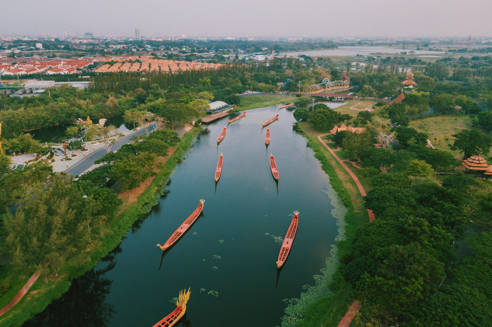
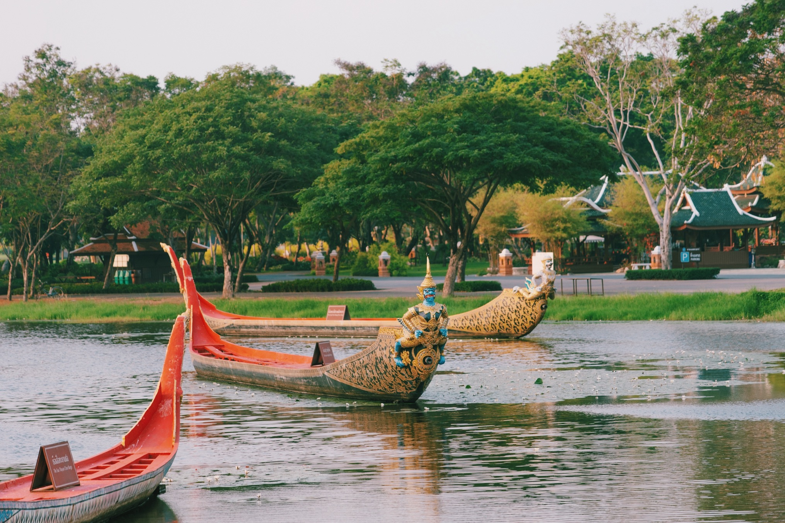
ส่วนจุดไฮไลต์ที่สุดของโซนสุวรรณภูมิจะอยู่ที่ “ศาลาพระอรหันต์” เป็นจุดที่ถ่ายรูปสวยมาก ย้ำว่ามากจริงจัง เรียกได้ว่าสวยงามตะลึงพรึงเพริดเลอเลิศพิศมัยไม่ว่าจะมอง มุมซ้ายหรือมุมขวาก็ดีทุกมุมจริง ๆ ตั้งแต่สะพานทางเข้าไปจนถึงใจกลางศาลา เราจะเห็นถึงความใส่ใจในรายละเอียดตั้งแต่การออกแบบจนถึงการตกแต่งในทุกส่วน จุดนี้เป็นศาลากลางน้ำที่ประดิษฐานพระอรหันต์แกะสลักจากไม้ตามคติพุทธศาสนามหายาน ซึ่งเราสามารถเดินขึ้นไปชมวิวจากมุมสูงด้านบนที่อยู่กลางศาลาได้ด้วย
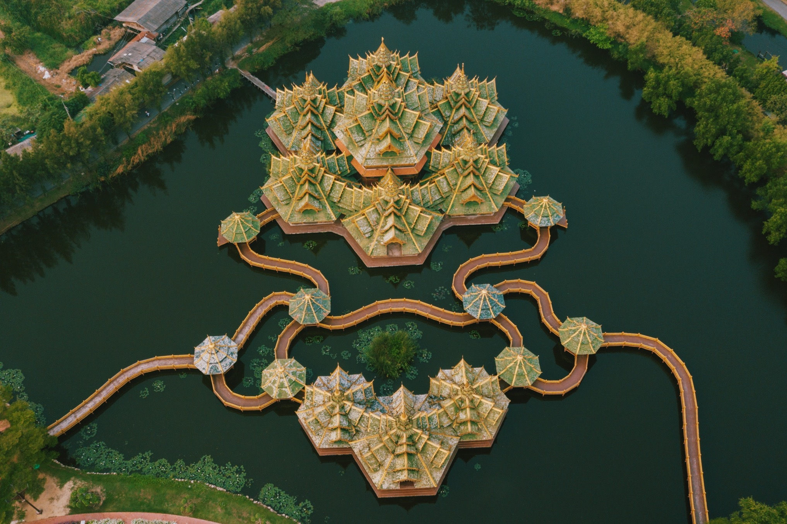
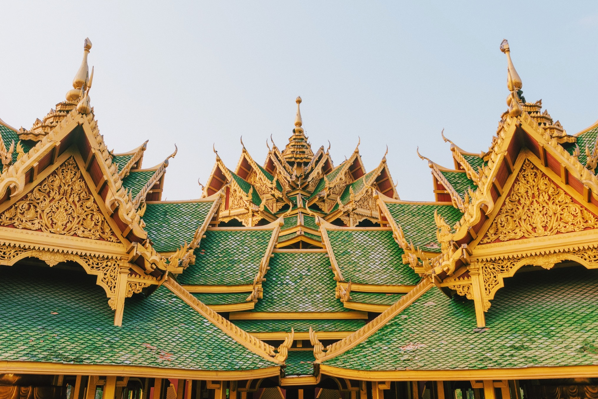
จุดถัดมาคือ “ศาลารามเกียรติ์” ศาลาห้าหลังกลางน้ำที่สร้างขึ้นเพื่อให้เป็นที่พักร้อนและเป็นสถานที่ประกอบพิธีกรรมในงานนักขัตฤกษ์ ภายในได้เขียนภาพรามเกียรติ์ประดับไวแต่ไฮไลต์อยู่ที่มีพระตรีมูรติอยู่ใจกลางศาลาด้วย ซึ่งขึ้นชื่อมากในเรื่องของความรักและมิตรภาพ ใครอยากได้คู่ อยากได้สหายผู้กองมานอนกอดสักคน แนะนำว่าให้มากราบไหว้ที่จุดนี้ได้เลยจ้า
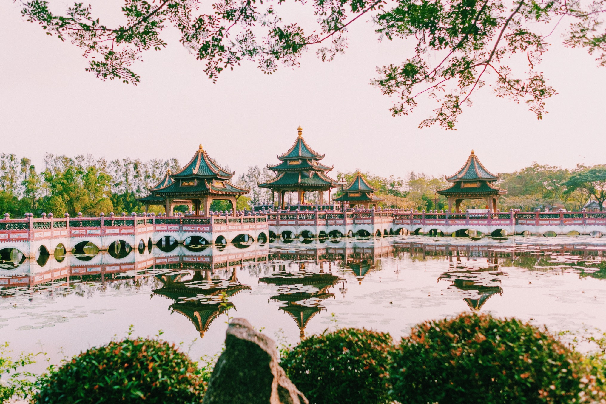
นอกจากนี้แล้ว ภายในโซนนี้ก็ยังมี พระโพธิสัตว์อวโลกิเตศวร กวนอิมพระโพธิสัตว์ผู้รักษาพระพุทธศาสนาของพระพุทธเจ้าองค์ปัจจุบันตามคติมหายาน ปางนี้จะเป็นการใช้เดชานุภาพปราบฝ่ายอธรรม เพื่อสร้างความสะพรึงกลัวให้กับหมู่มาร เป็นอีกจุดที่ควรแวะ สวยงามอลังการมากเช่นกันเด้อ
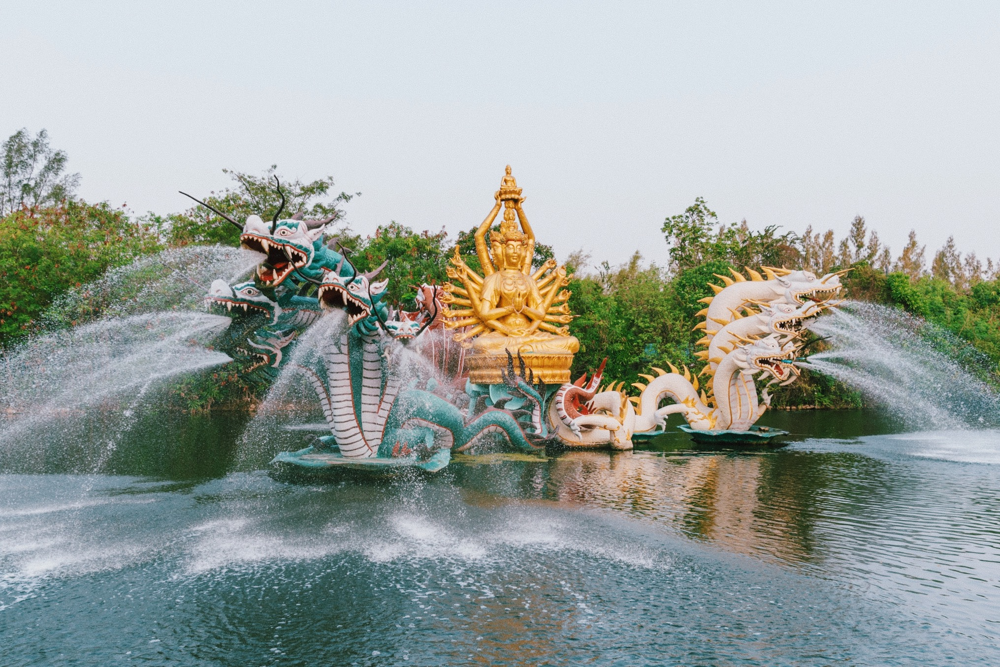
:: โซนภาคกลาง ::
ถัดมาเราขอพาทุกคนทัวร์ โซนภาคกลาง โซนที่เราจะได้เรียนรู้วิถีชีวิตของชาวสยามลุ่มเเม่นํ้าเจ้าพระยา อันมีความผูกพันธ์กับสายน้ำ ศูนย์กลางแห่งการปกครอง ศาสนา การค้า ศิลปวัฒนธรรม และประเพณีที่เจริญรุ่งเรืองมาตั้งเเต่สมัยอาณาจักรกรุงศรีอยุธยา สืบทอดมาจนถึงกรุงรัตนโกสินทร์ ไฮไลต์จุดแรกที่ห้ามพลาดคือ “มณฑปพระพุทธบาท สระบุรี”เป็นสถาปัตยกรรมที่เมืองโบราณถ่ายแบบองค์มณฑปมาจากเมืองสระบุรี สร้างลวดลายประดับตกแต่งจากนิราศ พระบาทสุนทรภู่ ปุณโณวาทคำฉันท์ของพระมหานาคและหลักฐานทางโบราณคดีอีกมากมาย โดยภายในมีรอยพระพุทธบาทที่ได้รับมอบมาจากอดีตประธานาธิบดี ประเทศอินเดีย จุดนี้ก็ถ่ายรูปสวยไม่แพ้กันทางเราแนะให้ลองแอคติ้งเหมือนกำลังก้าวขึ้บันไดแล้วหันมาแบบเผลอ ๆ เหมือนมีคนเรียก พวกเธอก็จะได้รูปที่ดูมีเสน่ห์ และเป็นธรรมชาติมากๆจ้า
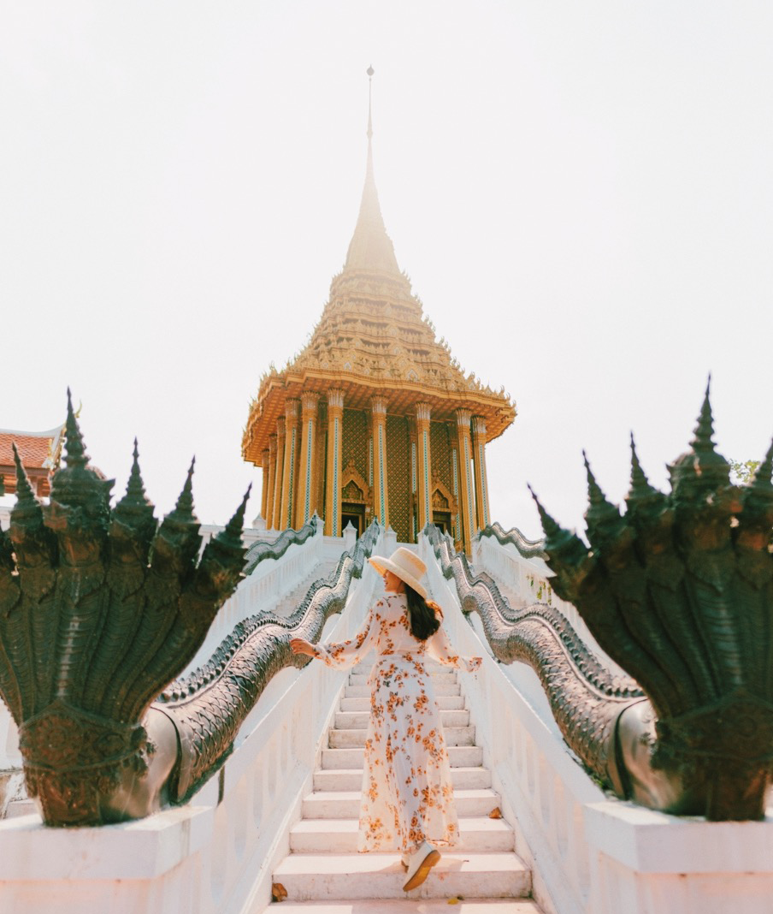
ใกล้กันมณฑปพระพุทธบาท สระบุรี เราก็จะเห็นความอลังของ “พระที่นั่งสรรเพชญปราสาท” ที่สร้างขึ้นจากการศึกษาหลักฐานทางโบราณคดีและข้อมูลทางประวัติศาสตร์ โดยพระที่นั่งองค์นี้เป็นสถานที่ว่าราชการแผ่นดินและประกอบพระราชพิธีสำคัญในสมัยกรุงศรีอยุธยา แสดงถึงพระบารมีแห่งพระมหากษัตริย์ และเป็นสัญลักษณ์แทนกรุงศรีอยุธยา เมื่อครั้งยังรุ่งเรืองอีกด้วย บอกเลยว่าใครชอบดูหนังย้อนยุคไม่ว่าจะสุริโยไท หรือเรื่องไหน ๆ ที่เกี่ยวกับประวัติศาสตร์ไทย จะต้องคุ้นตากับที่นี่แน่นอน เพราะเคยใช้เป็นโลเคชั่นถ่ายทำหนังมาแล้วหลายเรื่อง
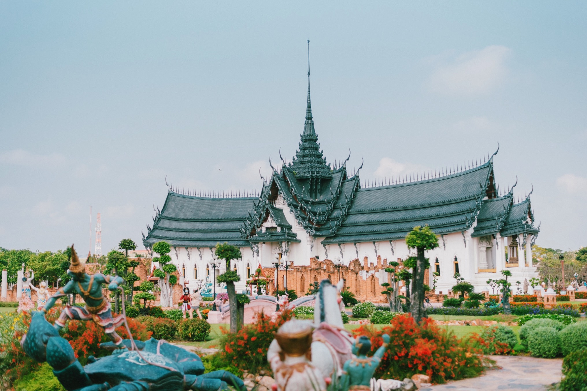
ถัดมาก็จะเป็น “พระที่นั่งดุสิตมหาปราสาท” โดยถ่ายแบบจากพระบรมมหาราชวังกรุงเทพมหานครมาเลย โดยพระที่นั่งองค์นี้พระบาทสมเด็จพระพุทธยอดฟ้า จุฬาโลกมหาราชทรงพระกรุณาโปรดเกล้าฯ ให้สถาปนาขึ้นเป็นพระมหาปราสาทประจำกรุงรัตนโกสินทร์ จึงมีความสวยงาม ดูยิ่งใหญ่อลังการมาก
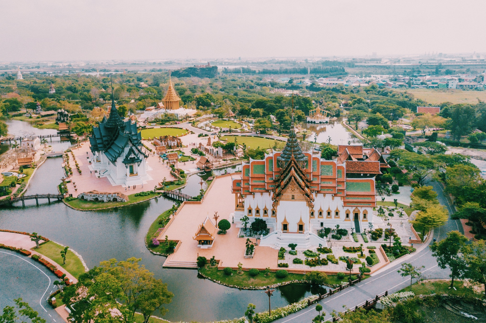
::โซนภาคอีสาน ::
ภาคกลางจบไปแบบตราตรึงใจ มาต่อกันที่ภาคอีสานบ้านเฮากันบ้าง อย่างที่รู้กันว่าภาคอีสานนั้นเป็นพื้นที่ราบอันกว้างใหญ่ในแถบลุ่มแม่น้ำโขงของไทยมีผู้คนอยู๋อาศัย สืบต่อกันมายาวนาน จึงมีศิลปวัฒนธรรมอันหลากหลาย ที่เรียบง่ายแต่โดดเด่น มีความเชื่อดั้งเดิมด้านประเพณีที่เกี่ยวกับการขอฝน พญานาคผสานกับแนวคิดที่ยึดมั่น ในพระพุทธศาสนา จึงมีสถานที่สำคัญอยู่หลายแห่ง อย่างจุดแรกของภาคอีสานคือ “ป่าเจดีย์” โดยที่นี่ได้รวบรวมรูปแบบเจดีย์ลักษณะต่าง ๆ ที่มีในประเทศไทยซึ่งแสดง ให้เห็นถึงความหลากหลายทางแนวคิดในการกำหนดรูปลักษณ์ทางศิลปกรรมในการอุทิศให้พระพุทธศาสนา บอกเลยว่าโซนนี้เหมือนหลุดออกจากเมืองหลวงแล้วมาเที่ยว ต่างจังหวัดจริง ๆ ทั้งบรรยากาศ ต้นไม้ และทุกอย่างมันชวนให้นึกว่าเรากำลังอยู่ในดินแดนริมแม่น้ำโขงเลยละ
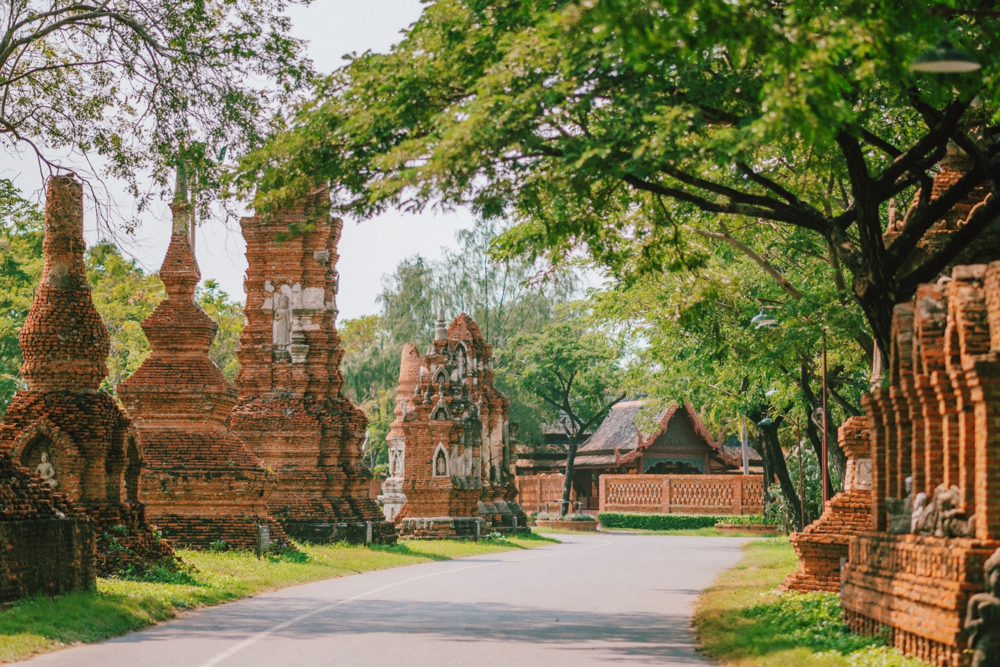
จุดที่ไม่ควรพลาดของภาคอีสานอีกหนึ่งจุดคือ “พระธาตุเชิงชุม” ตามตำนานความเชื่อเค้าเล่าต่อกันมาว่าบริเวณนี้เป็นที่รวมรอยพระพุทธบาทของพระพุทธเจ้า ทั้ง4พระองค์เลยกลายเป็นที่มาของการเรียกชื่อพระธาตุตามภาษาของชนพื้นเมืองว่าพระธาตุเชิงชุม ซึ่งการสร้างพระธาตุนี้ทางเมืองโบราณได้ถ่ายแบบพระธาตุเชิงชุมมา สร้างขึ้นมาใหม่ในสัดส่วนเท่ากับสถานที่จริง ภายในประดิษฐานรอยพระพุทธบาท เพื่อให้พ้องกับตำนาน มีกำแพงแก้วล้อมรอบองค์พระธาตุ บนกำแพงก็ตกแต่งด้วย พญานาคเลื้อยจำนวน 8 ตนชูเศียรหันหน้าเข้าหากันบริเวณทางเข้าทั้งสี่ด้าน นอกจากนี้ก็ยังมีวิหารล้านช้าง พระธาตุบังพวน พระธาตุพนม ปราสาทหินพนมรุ้ง และสถานที่สำคัญอื่นๆของภาคอีสานให้เราได้ชมอีกมากมาย เรียกได้ว่างานนี้สายถ่ายรูปก็ได้รูปสวย ๆ กลับไป สายมูทั้งหลายก็รับพรกลับไปแบบจุก
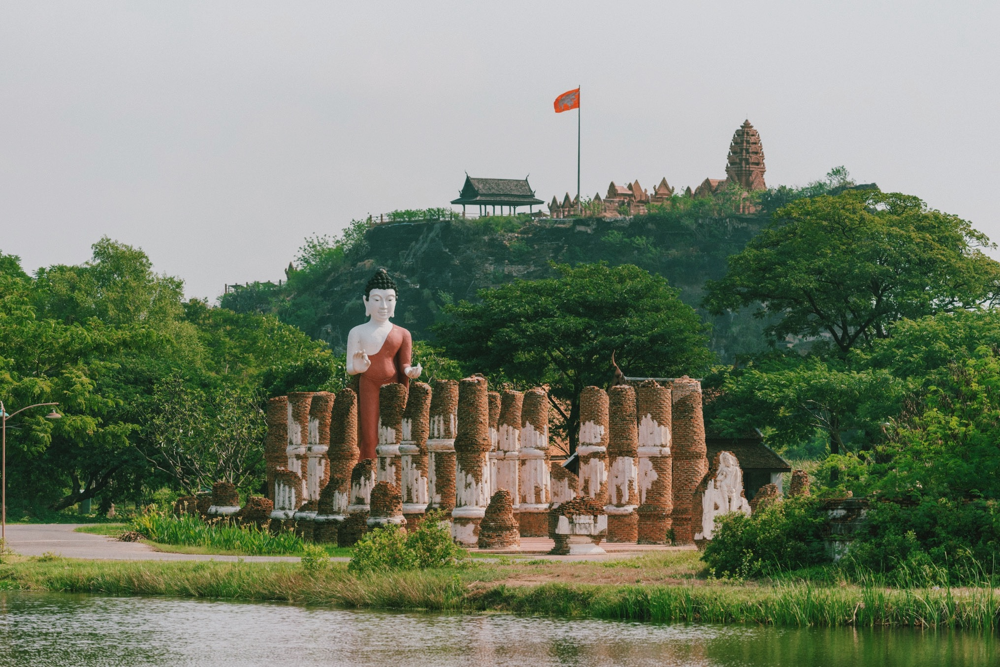
:: โซนภาคเหนือ ::
สวัสดีเจ้าตอนนี้ทางเราขอพาไปแอ่วกันต่อที่ โซนภาคเหนือ ดินแดนแห่งอาณาจักรล้านนาที่มีขนบธรรมเนียมประเพณีสืบทอดกันมายาวนานสะท้อนผ่านรูปแบบทางสถาปัตยกรรมอันเก่าแก่ บอกเลยว่าภาคเหนือของไทยนั้นมีเอกลักษณ์เฉพาะตัวมาก คือเห็นปุ๊บรู้เลยว่านี่คือภาคเหนือแน่นอน ไม่ว่าจะเป็นวัดวาอาราม อาคารบ้านเรือน หรือแม้แต่วิถีชีวิตของผู้คนที่มีเสน่ห์ อย่าง “วัดจองคำ” นี้ ก็เป็นอาคารเครื่องไม้สถาปัตยกรรมแบบไทใหญ่ที่ผาติกรรมมาจาก อ.งาว จ.ลำปาง โดยอาคารไม้หลังนี้เป็นลักษณะของวัดที่สร้างเขตพุทธาวาสและสังฆาวาสรวมกันไว้ในอาคารเพียงหลังเดียว ความโดนเด่นคือ การฉลุไม้ประดับส่วนต่าง ๆ โดยเฉพาะเครื่องหลังคาซึ่งมีความประณีตงดงามมาก ยิ่งดูยิ่งสวย หากใครยังไม่มีโอกาสไปลำปางสักทีก็มาชมความยิ่งใหญ่นี้ได้ที่เมืองโบราณเลยจ้า
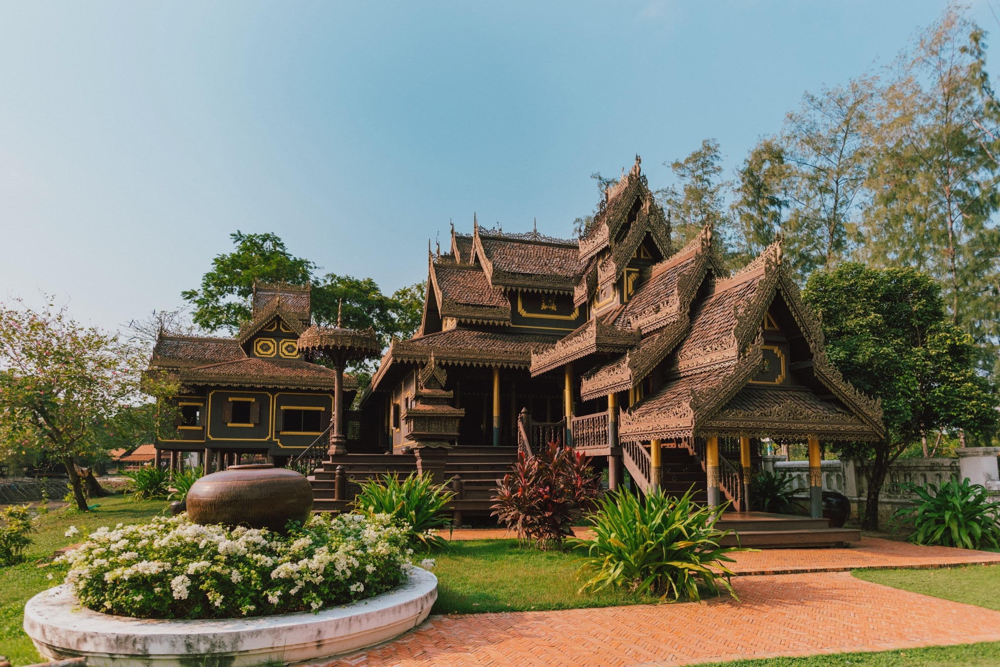
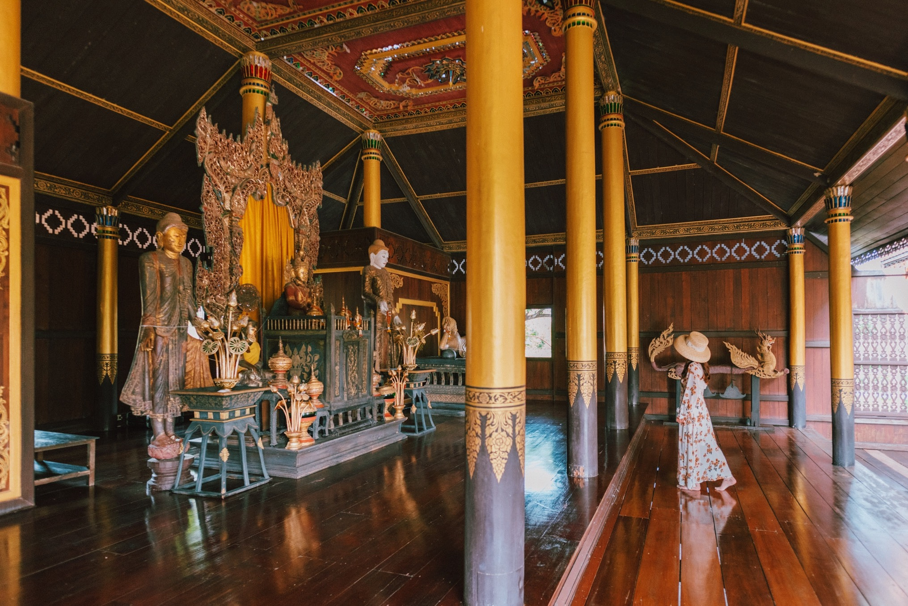
จากวัดจองคำมาต่อกันที่ “หอคำ” ซึ่งนอกจากจะได้สัมผัสอาคารที่ประทับหรือออกว่าราชของเจ้าผู้ครองนครในดินแดนล้านนาเดินชมศิลปะวัตถุที่จัดแสดงบนอาคาร แล้วเราจะได้เห็นรถม้าพาหนะที่ใช้จริงในสมัยก่อนของภาคเหนืออีกด้วย แถมยังมีเรื่องราวขออาณาจักรล้านนาต่าง ๆ ไม่ว่าจะเป็นนครเชียงใหม่ นครลำปางหรือเมือง หน้าด่านอย่างเมืองกำแพงเพชรให้เราได้ศึกษาประวัติความเป็นมาในอดีตอย่างเพลิดเพลิน
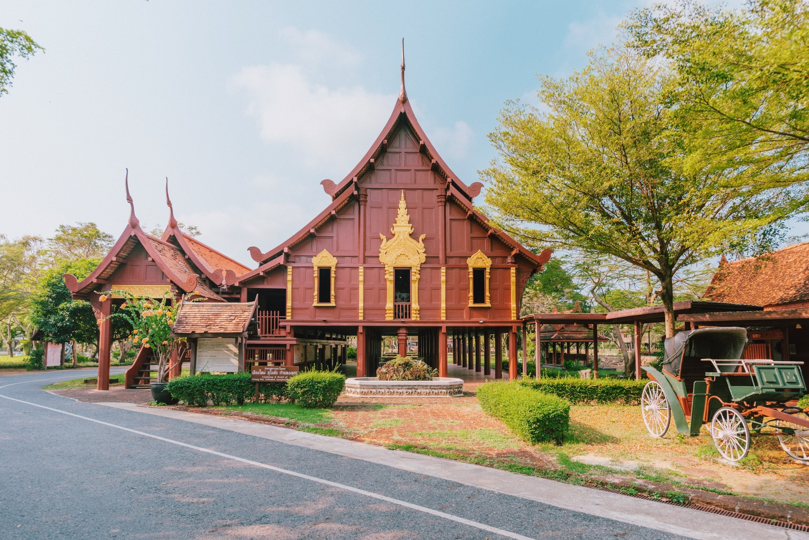
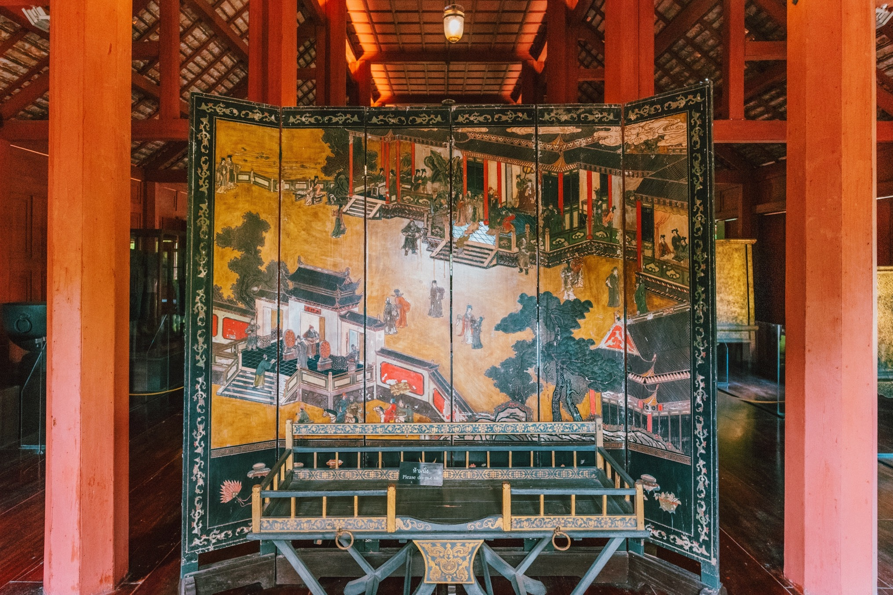
ไฮไลต์สุดท้ายของภาคเหนือจะอยู่ที่ “วิหารหลวงวัดมหาธาตุ จังหวัดสุโขทัย” ซึ่งที่นี่เค้าก็ถ่ายแบบมาได้ยิ่งใหญ่มาก ๆ ไม่ว่าจะอิฐ หิน หรือแม้แต่พระพุทธรูปก็ปั้นได้เหมือนที่สุโขทัยมาก ๆ เลยเธอ
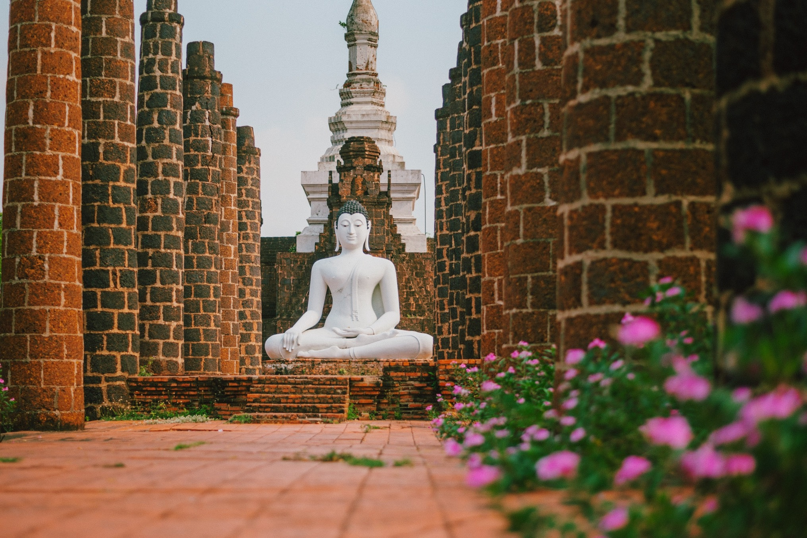
:: โซนภาคใต้ ::
นึกถึงปักษ์ใต้บ้านเราเมื่อไหร่ ก็ต้องนึกถึง พระบรมธาตุ จังหวัดพระนครศรีธรรมราช เสมอ เชื่อกันว่าเป็นเจดีย์ที่ประดิษฐานพระบรมสารีริกธาตุของพระพุทธเจ้า โดยลักษณะเจดีย์เป็นแบบลังกาวงศ์ ซึ่งทางเมืองโบราณก็ได้สร้างพระบรมธาตุ นครศรีธรรมราช โดยย่อส่วนลงเป็น 1ใน 3 ขององค์จริง แต่รายละเอียดต่าง ๆ ยังคงแบบตามต้นฉบับเดิมทุกอย่าง เพราะฉะนั้นถือเป็นมุมต้องห้ามพลาดอีกแล้วจ้าาาา
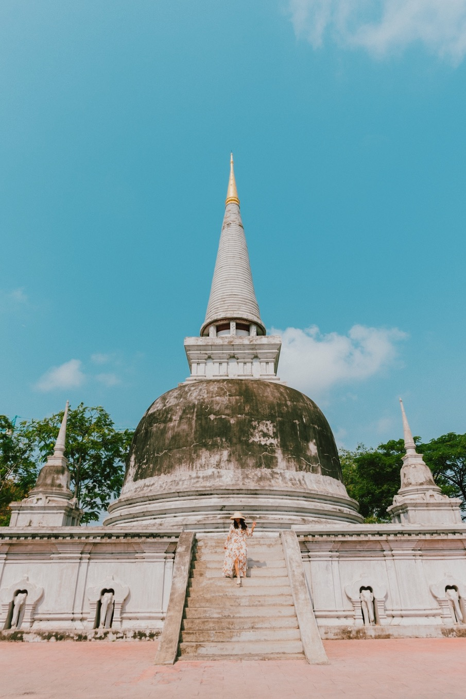